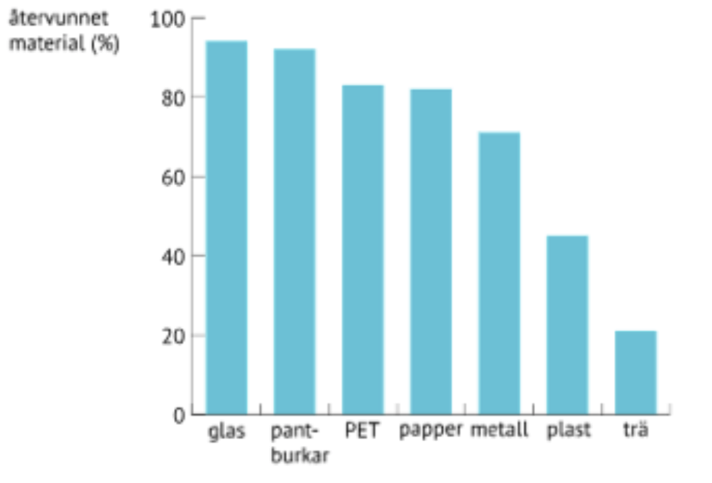
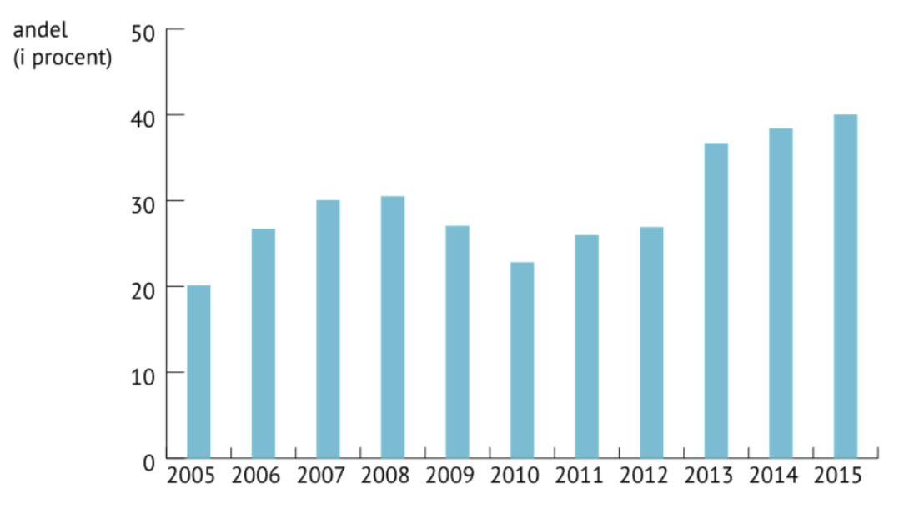
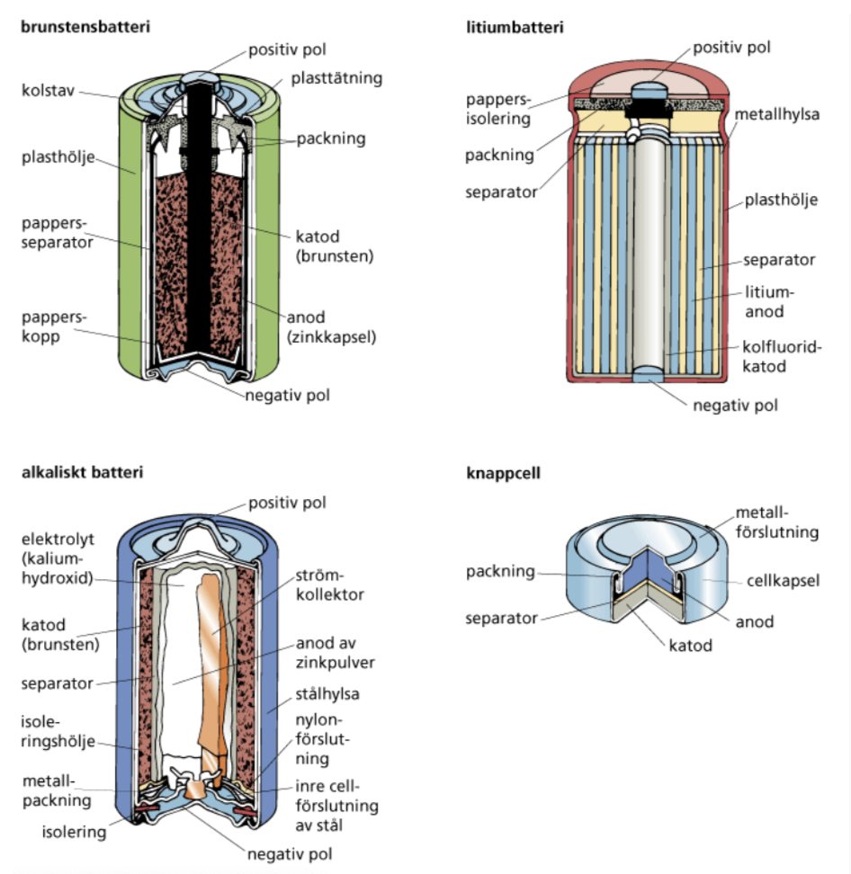

Återvinning
Återvinnings betydelse för en hållbar utveckling.
John Appleseed

7th December 2018
Materialåtervinning innebär att man på nytt framställer en viss produkt ur förbrukade varor som sopor och avfallsprodukter. Återvinning är en mycket uppskattad projekt som gör det möjligt för oss att ta tillvara på de förbrukade material som inte går att använda för det ursprungliga ändamålet längre. Återvinning har varit användbart av två viktiga skäl, dels finns det begränsad tillgång på en viss vara och dels för att återvinning av det redan använt material är billigare än att utvinna materialet på nytt. Återvinning av en del material som exempelvis en del laminat och legeringar är svårare och ibland till och med omöjlig. Här nedan finns en procentuell översikt på ett flertal material som har återvunnits år 2015 i Sverige.
Bilden hämtad från:SCB, 2018
Plaståtervinning:
Deponering av plast är idag inte tillåtet eftersom den orsakade bland annat dålig lukt, metangasbildning med ökad risk för grundvattenförorening och att deponeringen krävde stort utrymme. Materialåtervinning av plast sker dels som avfall från förbrukade varor och dels som produktionsförlust vid framställning av en produkt. Plaståtervinning ur sopor kräver framförallt källsortering, insamling och bearbetning.
Bilden hämtad från: förpackning & tidningsinsamlingen 2018
Återvinning av plast har ökat de senaste åren men det finns fortfarande en del svårigheter kring plaståtervinning. Plast innehåller en mängd olika fyllmedel och är oftast infärgade med olika färgpigment. Dessutom tillsätts andra medel som ger den andra mekaniska egenskaper, som till exempel bättre hållfasthet. Allt detta gör sorteringsarbetet komplicerat och besvärligt.
Aluminiumåtervinning:
Aluminium framställs framför allt av aluminiumhydroxid så kallad bauxit. Aluminiumhydroxiden omvandlas med hjälp av stor tillsats av fossila bränslen till oxid som i sin tur kan omvandlas till renaluminium. Omvandlingen från oxid till renaluminium kräver mycket energi. För att framställa ett ton renaluminium krävs det ca 10 000 kWh fossilt bränsle. Aluminiumframställning av omsmält metall, exempelvis omsmält aluminium stiger dels för att aluminium kan smältas om ett obegränsat antal gånger och dels för att återvinningen enbart kräver fem procent av den energi som går ut på nytt framställning av aluminum, dvs från bauxit. Den tekniska återvinningsprocessen för aluminium är enkel. Aluminiumprodukter som är framställd av olegerat material kan omedelbart smältas ned och användas på nytt. Medan aluminum tillverkad av legerat material kan först rengöras och sedan kan den smältas ned och justeras till önskade egenskaper.
Batteriåtervinning:
Sedan ca 10 år tillbaka regleras återvinningen av batterier inom Eu:s batteridirektiv. Lagen innefattar alla länder inom EU och den talar om för länderna att ha en minimikrav på mängden insamlade batterier. Detta betyder att alla batterier ska återvinnas och märkas korrekt samt deponeringen av batterier ska upphöra. I Sverige finns sedan 2009 en lag som innefattar alla företag som säljer eller tillverkar elektroniska produkter och förordar företagen ett producentansvar. Gällande batterier gäller ansvaret under hela batteriets livscykel, dvs insamlingen, borttransporten och återvinningen. Företag som tillverkar batterier är skyldiga att märka batterier med en återvinningssymbol och batterier som säljs eller insamlas rapporteras i Naturvårdsverkets batteriregister.

Bilden hämtad från: Nationalencyklopedin 2018
Alla batterier sorteras efter sitt kemiska innehåll vid återvinning. Man återvinner materialen så långt det går. Beroende på vilken batterityp det är återvinns materialen olika mycket. Återvinningsgraden för alla batterityper ligger från 60 till 98 procent.
Källförteckning:
Nationalencyklopedin, Återvinning. [hämtad 2018-12-02]
Nationalencyklopedin, Återvinning, Aluminium. [2018-12-06]
Nationalencyklopedin, Batteri. [2018-12-03]
Nationalencyklopedin, Plast. [2018-12-07]
Återvinningscentralen, Plast. [2018-12-02]
Återvinningscentralen, aluminium. [2018-12-02]
John Appleseed is a writer for Green Enviroment and created this article with .